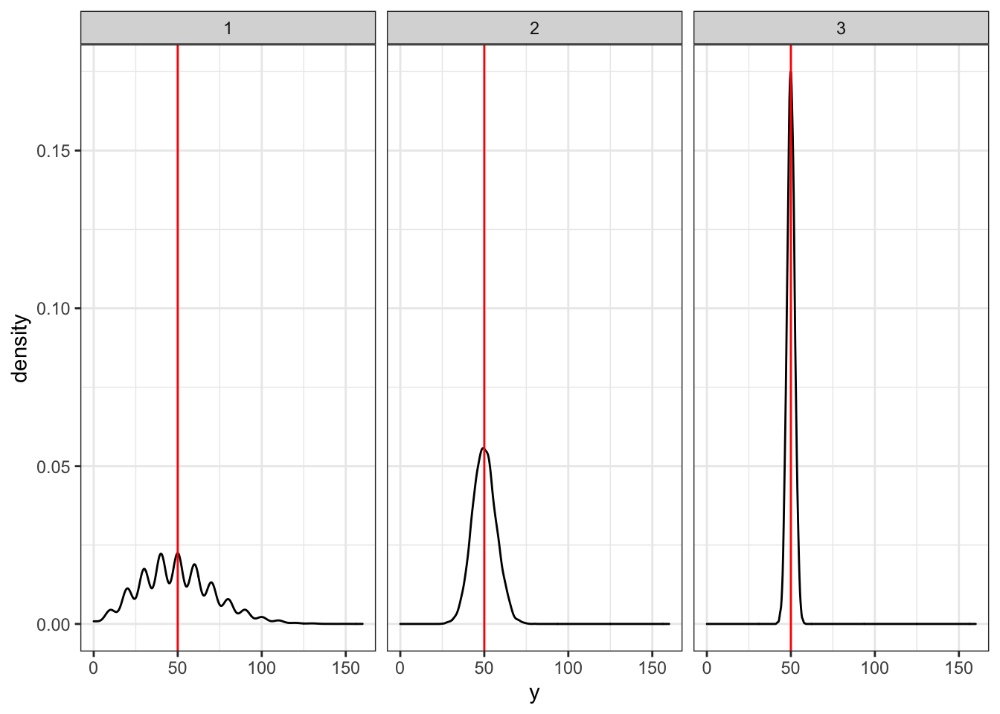

No offset
The gene is extremely significantly DE between groups.
set.seed(65)
nPerGroup <- 8
y <- c(rpois(n=nPerGroup, lambda = 7),
rpois(n=nPerGroup, lambda = 11))
group <- rep(1:2, each = nPerGroup)
plot(group, y)
# Poisson GLM, no library size: signifcantly DE
m <- glm(y ~ factor(group),
family = "poisson")
summary(m)
##
## Call:
## glm(formula = y ~ factor(group), family = "poisson")
##
## Deviance Residuals:
## Min 1Q Median 3Q Max
## -1.7195 -0.7771 0.0556 0.8105 1.1133
##
## Coefficients:
## Estimate Std. Error z value Pr(>|z|)
## (Intercept) 1.6582 0.1543 10.747 < 2e-16 ***
## factor(group)2 0.7621 0.1869 4.078 4.53e-05 ***
## ---
## Signif. codes: 0 '***' 0.001 '**' 0.01 '*' 0.05 '.' 0.1 ' ' 1
##
## (Dispersion parameter for poisson family taken to be 1)
##
## Null deviance: 30.916 on 15 degrees of freedom
## Residual deviance: 13.055 on 14 degrees of freedom
## AIC: 78.587
##
## Number of Fisher Scoring iterations: 4
Library size offset
Since library sizes are different between groups, accounting for library size results in the gene no longer being DE at the 5% significance level. Not correcting for sequencing depth would thus result in spurious results.
# Suppose library sizes are different between groups
libSize <- c(rpois(n=nPerGroup, lambda = 1e5),
rpois(n=nPerGroup, lambda = 1.5e5))
# Poisson GLM with library size offset: no longer significantly DE on 5% level.
m <- glm(y ~ factor(group) + offset(log(libSize)),
family = "poisson")
summary(m)
##
## Call:
## glm(formula = y ~ factor(group) + offset(log(libSize)), family = "poisson")
##
## Deviance Residuals:
## Min 1Q Median 3Q Max
## -1.73231 -0.78231 0.05288 0.81088 1.11070
##
## Coefficients:
## Estimate Std. Error z value Pr(>|z|)
## (Intercept) -9.8536 0.1543 -63.859 <2e-16 ***
## factor(group)2 0.3545 0.1869 1.897 0.0578 .
## ---
## Signif. codes: 0 '***' 0.001 '**' 0.01 '*' 0.05 '.' 0.1 ' ' 1
##
## (Dispersion parameter for poisson family taken to be 1)
##
## Null deviance: 16.851 on 15 degrees of freedom
## Residual deviance: 13.111 on 14 degrees of freedom
## AIC: 78.643
##
## Number of Fisher Scoring iterations: 4
Scaling versus offsets
In RNA-seq, we are working with count data. Count data has an inherent mean-variance structure, where the variance is positively associated with the mean. For example, assume a random variable \(Y_{i} \sim Poi(\mu)\), where \(i \in \{1, \ldots, n\}\). We can visualize the mean-variance relationship by simulating different random variables \(\mathbf{Y}_1, \mathbf{Y}_2, \mathbf{Y}_3\). Say,
\[ Y_{1i} \sim Poi(\mu_1 = 5) \] \[ Y_{2i} \sim Poi(\mu_2 = 50) \] \[ Y_{3i} \sim Poi(\mu_3 = 500) \]
Below, we enforce the same mean for all three random variables, i.e. we create the set of random variables \(\{ Y_{1i} \times 10, Y_{2i}, Y_{3i} / 10 \}\), and plot the density of each variable. It is clear that the distributions are drastically different. This is because, although they all have the same mean, their variance is different, and indeed this is because of the mean-variance relationship that was impliclty used when simulating the data.
library(ggplot2)
set.seed(50)
n <- 1e4
y1 <- rpois(n = n, lambda = 5)
y2 <- rpois(n = n, lambda = 50)
y3 <- rpois(n = n, lambda = 500)
df <- data.frame(y = c(y1 * 10, y2, y3 / 10),
gr = factor(rep(1:3, each = n)))
ggplot(df, aes(x=y)) +
geom_density() +
facet_wrap(. ~ gr) +
geom_vline(xintercept = 50, col="red") +
theme_bw()

But didn’t you say a higher mean was associated with a higher variance?
The critical reader would rightly so be somewhat confused at this point. Indeed, above we wrote that “the variance is positively associated with the mean”, but the density plots are showing that \(\mathbf{Y}_3\), which was simulated to have the highest mean, has the smallest variance. Based on the simulation, we have that \(Var(\mathbf{Y}_3) = 500\). However, \(Var(\mathbf{Y}_3 / 10) = \frac{1}{100} Var(\mathbf{Y}_3) = 5\). Thus, \(\mathbf{Y}_3\) indeed will have a small variance upon rescaling.
One could also say that the relative certainty of the mean of a Poisson random variable increases with its mean. With relative certainty, we mean the coefficient of variation (CV). Indeed, the CV of a Poisson distribution decreases with the mean
\[ CV(\mathbf{Y}_3) \le CV(\mathbf{Y}_2) \le CV(\mathbf{Y}_1). \]
We show this below using our simulated data.
calcCV <- function(x) sd(x) / mean(x)
cv1 <- calcCV(y1) ; cv1
## [1] 0.4477185
## [1] 0.1417173
## [1] 0.0449334
plot(x=c(mean(y1), mean(y2), mean(y3)),
y=c(cv1, cv2, cv3),
xlab="Mean",
ylab="CV")
See also appendix B1 of Ahlmann-Eltze & Huber (2021) for more information and a more formal justification.
LS0tCnRpdGxlOiAiU2NhbGluZyBub3JtYWxpemF0aW9uIGFuZCBvZmZzZXRzIgphdXRob3I6ICJLb2VuIFZhbiBkZW4gQmVyZ2UiCm91dHB1dDogCiAgaHRtbF9kb2N1bWVudDoKICAgIHRvYzogdHJ1ZQogICAgdG9jX2Zsb2F0OiB0cnVlCi0tLQoKCiMgTm8gb2Zmc2V0CgpUaGUgZ2VuZSBpcyBleHRyZW1lbHkgc2lnbmlmaWNhbnRseSBERSBiZXR3ZWVuIGdyb3Vwcy4KCmBgYHtyfQpzZXQuc2VlZCg2NSkKblBlckdyb3VwIDwtIDgKeSA8LSBjKHJwb2lzKG49blBlckdyb3VwLCBsYW1iZGEgPSA3KSwKICAgICAgIHJwb2lzKG49blBlckdyb3VwLCBsYW1iZGEgPSAxMSkpCmdyb3VwIDwtIHJlcCgxOjIsIGVhY2ggPSBuUGVyR3JvdXApCnBsb3QoZ3JvdXAsIHkpCgojIFBvaXNzb24gR0xNLCBubyBsaWJyYXJ5IHNpemU6IHNpZ25pZmNhbnRseSBERQptIDwtIGdsbSh5IH4gZmFjdG9yKGdyb3VwKSwKICAgICAgICAgZmFtaWx5ID0gInBvaXNzb24iKQpzdW1tYXJ5KG0pCmBgYAoKIyBMaWJyYXJ5IHNpemUgb2Zmc2V0CgpTaW5jZSBsaWJyYXJ5IHNpemVzIGFyZSBkaWZmZXJlbnQgYmV0d2VlbiBncm91cHMsIGFjY291bnRpbmcgZm9yIGxpYnJhcnkgc2l6ZSByZXN1bHRzIGluIHRoZSBnZW5lIG5vIGxvbmdlciBiZWluZyBERSBhdCB0aGUgNSUgc2lnbmlmaWNhbmNlIGxldmVsLiBOb3QgY29ycmVjdGluZyBmb3Igc2VxdWVuY2luZyBkZXB0aCB3b3VsZCB0aHVzIHJlc3VsdCBpbiBzcHVyaW91cyByZXN1bHRzLgoKYGBge3J9CiMgU3VwcG9zZSBsaWJyYXJ5IHNpemVzIGFyZSBkaWZmZXJlbnQgYmV0d2VlbiBncm91cHMKbGliU2l6ZSA8LSBjKHJwb2lzKG49blBlckdyb3VwLCBsYW1iZGEgPSAxZTUpLAogICAgICAgICAgICAgcnBvaXMobj1uUGVyR3JvdXAsIGxhbWJkYSA9IDEuNWU1KSkKCiMgUG9pc3NvbiBHTE0gd2l0aCBsaWJyYXJ5IHNpemUgb2Zmc2V0OiBubyBsb25nZXIgc2lnbmlmaWNhbnRseSBERSBvbiA1JSBsZXZlbC4KbSA8LSBnbG0oeSB+IGZhY3Rvcihncm91cCkgKyBvZmZzZXQobG9nKGxpYlNpemUpKSwKICAgICAgICAgZmFtaWx5ID0gInBvaXNzb24iKQpzdW1tYXJ5KG0pCmBgYAoKCiMgU2NhbGluZyB2ZXJzdXMgb2Zmc2V0cwoKSW4gUk5BLXNlcSwgd2UgYXJlIHdvcmtpbmcgd2l0aCBjb3VudCBkYXRhLiBDb3VudCBkYXRhIGhhcyBhbiBpbmhlcmVudCBtZWFuLXZhcmlhbmNlIHN0cnVjdHVyZSwgd2hlcmUgdGhlIHZhcmlhbmNlIGlzIHBvc2l0aXZlbHkgYXNzb2NpYXRlZCB3aXRoIHRoZSBtZWFuLgpGb3IgZXhhbXBsZSwgYXNzdW1lIGEgcmFuZG9tIHZhcmlhYmxlICRZX3tpfSBcc2ltIFBvaShcbXUpJCwgd2hlcmUgJGkgXGluIFx7MSwgXGxkb3RzLCBuXH0kLiBXZSBjYW4gdmlzdWFsaXplIHRoZSBtZWFuLXZhcmlhbmNlIHJlbGF0aW9uc2hpcCBieSBzaW11bGF0aW5nIGRpZmZlcmVudCByYW5kb20gdmFyaWFibGVzICRcbWF0aGJme1l9XzEsIFxtYXRoYmZ7WX1fMiwgXG1hdGhiZntZfV8zJC4KU2F5LAoKXFsgWV97MWl9IFxzaW0gUG9pKFxtdV8xID0gNSkgXF0KXFsgWV97Mml9IFxzaW0gUG9pKFxtdV8yID0gNTApIFxdClxbIFlfezNpfSBcc2ltIFBvaShcbXVfMyA9IDUwMCkgXF0KCkJlbG93LCB3ZSBlbmZvcmNlIHRoZSBzYW1lIG1lYW4gZm9yIGFsbCB0aHJlZSByYW5kb20gdmFyaWFibGVzLCBpLmUuIHdlIGNyZWF0ZSB0aGUgc2V0IG9mIHJhbmRvbSB2YXJpYWJsZXMgJFx7IFlfezFpfSBcdGltZXMgMTAsIFlfezJpfSwgWV97M2l9IC8gMTAgXH0kLCBhbmQgcGxvdCB0aGUgZGVuc2l0eSBvZiBlYWNoIHZhcmlhYmxlLgpJdCBpcyBjbGVhciB0aGF0IHRoZSBkaXN0cmlidXRpb25zIGFyZSBkcmFzdGljYWxseSBkaWZmZXJlbnQuIFRoaXMgaXMgYmVjYXVzZSwgYWx0aG91Z2ggdGhleSBhbGwgaGF2ZSB0aGUgc2FtZSBtZWFuLCB0aGVpciB2YXJpYW5jZSBpcyBkaWZmZXJlbnQsIGFuZCBpbmRlZWQgdGhpcyBpcyBiZWNhdXNlIG9mIHRoZSBtZWFuLXZhcmlhbmNlIHJlbGF0aW9uc2hpcCB0aGF0IHdhcyBpbXBsaWNsdHkgdXNlZCB3aGVuIHNpbXVsYXRpbmcgdGhlIGRhdGEuIAoKYGBge3J9CmxpYnJhcnkoZ2dwbG90MikKc2V0LnNlZWQoNTApCm4gPC0gMWU0CnkxIDwtIHJwb2lzKG4gPSBuLCBsYW1iZGEgPSA1KQp5MiA8LSBycG9pcyhuID0gbiwgbGFtYmRhID0gNTApCnkzIDwtIHJwb2lzKG4gPSBuLCBsYW1iZGEgPSA1MDApCgpkZiA8LSBkYXRhLmZyYW1lKHkgPSBjKHkxICogMTAsIHkyLCB5MyAvIDEwKSwKICAgICAgICAgICAgICAgICBnciA9IGZhY3RvcihyZXAoMTozLCBlYWNoID0gbikpKQoKZ2dwbG90KGRmLCBhZXMoeD15KSkgKwogIGdlb21fZGVuc2l0eSgpICsKICBmYWNldF93cmFwKC4gfiBncikgKwogIGdlb21fdmxpbmUoeGludGVyY2VwdCA9IDUwLCBjb2w9InJlZCIpICsKICB0aGVtZV9idygpCmBgYAoKKipCdXQgZGlkbid0IHlvdSBzYXkgYSBoaWdoZXIgbWVhbiB3YXMgYXNzb2NpYXRlZCB3aXRoIGEgaGlnaGVyIHZhcmlhbmNlPyoqCgpUaGUgY3JpdGljYWwgcmVhZGVyIHdvdWxkIHJpZ2h0bHkgc28gYmUgc29tZXdoYXQgY29uZnVzZWQgYXQgdGhpcyBwb2ludC4gSW5kZWVkLCBhYm92ZSB3ZSB3cm90ZSB0aGF0ICoidGhlIHZhcmlhbmNlIGlzIHBvc2l0aXZlbHkgYXNzb2NpYXRlZCB3aXRoIHRoZSBtZWFuIiosIGJ1dCB0aGUgZGVuc2l0eSBwbG90cyBhcmUgc2hvd2luZyB0aGF0ICRcbWF0aGJme1l9XzMkLCB3aGljaCB3YXMgc2ltdWxhdGVkIHRvIGhhdmUgdGhlIGhpZ2hlc3QgbWVhbiwgaGFzIHRoZSBzbWFsbGVzdCB2YXJpYW5jZS4gQmFzZWQgb24gdGhlIHNpbXVsYXRpb24sIHdlIGhhdmUgdGhhdCAkVmFyKFxtYXRoYmZ7WX1fMykgPSA1MDAkLiBIb3dldmVyLCAkVmFyKFxtYXRoYmZ7WX1fMyAvIDEwKSA9IFxmcmFjezF9ezEwMH0gVmFyKFxtYXRoYmZ7WX1fMykgPSA1JC4gVGh1cywgJFxtYXRoYmZ7WX1fMyQgaW5kZWVkIHdpbGwgaGF2ZSBhIHNtYWxsIHZhcmlhbmNlIHVwb24gcmVzY2FsaW5nLgoKT25lIGNvdWxkIGFsc28gc2F5IHRoYXQgdGhlICoqcmVsYXRpdmUqKiBjZXJ0YWludHkgb2YgdGhlIG1lYW4gb2YgYSBQb2lzc29uIHJhbmRvbSB2YXJpYWJsZSBpbmNyZWFzZXMgd2l0aCBpdHMgbWVhbi4gV2l0aCByZWxhdGl2ZSBjZXJ0YWludHksIHdlIG1lYW4gdGhlIGNvZWZmaWNpZW50IG9mIHZhcmlhdGlvbiAoQ1YpLiBJbmRlZWQsIHRoZSBDViBvZiBhIFBvaXNzb24gZGlzdHJpYnV0aW9uIGRlY3JlYXNlcyB3aXRoIHRoZSBtZWFuCgpcWyBDVihcbWF0aGJme1l9XzMpIFxsZSBDVihcbWF0aGJme1l9XzIpIFxsZSBDVihcbWF0aGJme1l9XzEpLiAgXF0KCldlIHNob3cgdGhpcyBiZWxvdyB1c2luZyBvdXIgc2ltdWxhdGVkIGRhdGEuCgpgYGB7cn0KY2FsY0NWIDwtIGZ1bmN0aW9uKHgpIHNkKHgpIC8gbWVhbih4KQpjdjEgPC0gY2FsY0NWKHkxKSA7IGN2MQpjdjIgPC0gY2FsY0NWKHkyKSA7IGN2MgpjdjMgPC0gY2FsY0NWKHkzKSA7IGN2MwoKcGxvdCh4PWMobWVhbih5MSksIG1lYW4oeTIpLCBtZWFuKHkzKSksCiAgICAgeT1jKGN2MSwgY3YyLCBjdjMpLAogICAgIHhsYWI9Ik1lYW4iLAogICAgIHlsYWI9IkNWIikKYGBgCgoKU2VlIGFsc28gYXBwZW5kaXggQjEgb2YgW0FobG1hbm4tRWx0emUgXCYgSHViZXIgKDIwMjEpXShodHRwczovL3d3dy5iaW9yeGl2Lm9yZy9jb250ZW50LzEwLjExMDEvMjAyMS4wNi4yNC40NDk3ODF2MikgZm9yIG1vcmUgaW5mb3JtYXRpb24gYW5kIGEgbW9yZSBmb3JtYWwganVzdGlmaWNhdGlvbi4KCgoKCg==